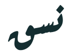
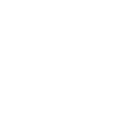

الشعار الكتابي
الاسم العربي هو الشعار كاملًا. استخدم النسخة باللون الأخضر المزرق على الخلفيات الفاتحة.
نسق · الهوية البصرية
هوية واحدة. تفاصيل متّسقة.
لغة بصرية مشتركة تمنح التفاصيل الصغيرة اتّساقها، وتجعل الخدمات الرقمية أوضح وأسهل استخدامًا.
نظام تصميم مستقل للمنصات الرقمية السعودية، يضع العربية أولًا.

الاسم هو العلامة٠١ / الهوية
الشعار هو كلمة «نسق» بخط عارف رقعة العريض (Aref Ruqaa Bold)، محوّلة إلى مسارات متجهة قابلة للتعديل. يظهر الاسم العربي وحده، من دون رمز إضافي أو كتابة لاتينية. استخدم الشعار نفسه في الواجهات العربية والإنجليزية.
الاسم العربي هو الشعار كاملًا. استخدم النسخة باللون الأخضر المزرق على الخلفيات الفاتحة.

استخدم النسخة الحبرية عندما يحتاج المحتوى المحيط إلى حضور بصري أكثر هدوءًا.
تحافظ النسختان العاجية والبيضاء على وضوح الحروف فوق الخلفيات الخضراء المزرقة أو الحبرية.
مساحة تمنح الحروف وضوحها
اترك مساحة خالية لا تقل عن ١٢ وحدة حول الشعار ضمن إطار الرسم البالغ 144 × 112. يُفضّل ألّا يقل عرضه عن ٤٨ بكسل CSS عند عرضه في الواجهة. استخدم أيقونة الموقع المخصصة في علامات تبويب المتصفح الصغيرة.
لا تعكس الشعار أو تمدّده أو تدوّره أو تفصل حروفه. ولا تضف رمزًا أو اسمًا بالإنجليزية تحته. إذا كان الشعار رابطًا للصفحة الرئيسية، فامنحه اسمًا واضحًا لقارئ الشاشة، مثل «نسق — الصفحة الرئيسية».
٠٢ / الألوان
يُبرز الأخضر المزرق الإجراءات الرئيسية، ويمنح النعناعي المساحات هدوءًا، بينما يضيف العاجي دفئًا إلى الخلفية ويحافظ الحبري على راحة القراءة. لكل لون دور يساعد المستخدم على إنجاز مهمته.
#006A64للإجراءات الرئيسية والشعار. التباين مع النص الأبيض: 6.47:1.
#C8E7DDللخلفيات المساندة. التباين مع النص الحبري: 11.00:1.
#F7F5EEلخلفية الهوية. التباين مع النص الحبري: 13.30:1.
#142D30للنصوص والخلفيات الداكنة. التباين مع النص النعناعي: 11.00:1.
تتجاوز تركيبات النص والخلفية المصمتة هذه حد التباين 4.5:1 المحدد في WCAG للنص العادي. وتبلغ نسبة تباين الأخضر المزرق على العاجي 5.93:1. افحص كل تركيبة جديدة وكل طبقة متراكبة وحالة تفاعل ورسم بياني على حدة. لا تعتمد على اللون وحده لتوضيح الحالة.
٠٣ / الخطوط وأسلوب الكتابة
يستخدم الشعار مسارات خط Aref Ruqaa Bold. أما نصوص الواجهة فتستخدم IBM Plex Sans Arabic وIBM Plex Sans لوضوحهما وملاءمتهما للقراءة اليومية. امنح الأسطر العربية ارتفاعًا مريحًا، وحافظ على اتصال الحروف. اللغة الواضحة جزء من الهوية أيضًا.
تفاصيل متّسقة.
تجارب أقرب.
نصمّم واجهات واضحة، تساعد الناس على إنجاز ما يحتاجون إليه بثقة.
IBM Plex Sans Arabic · عادي ٤٠٠ / شبه عريض ٦٠٠Good details.
Better together.
Build clear interfaces that help people complete their everyday tasks with confidence.
IBM Plex Sans · Regular 400 / Medium 550سمِّ الإجراءات بالكلمات المألوفة للمستخدم. وضّح ما حدث، ثم الخطوة التالية المفيدة. تجنّب المبالغة في عبارات الثناء والمصطلحات المعقّدة في رسائل الخدمة.
حُفظت التغييرات. يمكنك مراجعتها قبل النشر.
Changes saved. You can review them before publishing.
يُكتب الاسم نسق بالعربية وNasaq باللاتينية. حافظ على هاتين الصيغتين. في النصوص الإنجليزية، ابدأ الجمل بحرف كبير من دون تكبير كل الكلمات. ولا تضف تباعدًا بين حروف العربية المتصلة.
نظام تصميم مستقل، يضع العربية أولًا، للمنصات الرقمية السعودية.
العبارة التعريفية المختصرة: «وضوحٌ يربط التفاصيل». وبالإنجليزية: “Clarity, woven together.”
٠٤ / الاستخدام
تظهر جودة الهوية في المهام اليومية البسيطة. جرّب هذا النموذج: قارن المظهر الفاتح والداكن، واكتب بالعربية أو الإنجليزية، ثم احفظ اسمًا تجريبيًا داخل الصفحة.
هذا نموذج لتطبيق الهوية. توثّق مكتبة المكونات تفاصيل التفاعل والتحقق من المدخلات وإمكانية الوصول.
٠٥ / الحركة
تحاكي الحركة تسلسلًا مُعاد بناؤه للكتابة اليدوية: تبدأ النون وتتصل بالسين، ثم يتشكّل رأس القاف وتجويفها ونهايتها. وبعد رفع قصير للقلم، تُضاف نقطة النون المعينية. تبقى مسارات الشعار الأصلية كما هي، بما فيها علامات القاف المدمجة في نهايتها. تستغرق الدورة ٣٫٦ ثانية؛ يظهر الاسم كاملًا للحظة، ثم يختفي وتبدأ الكتابة مجددًا. تتوفر ملفات GIF شفافة باللونين الأخضر المزرق والأبيض، ويحل الشعار الثابت محل الحركة عند تفعيل تفضيل تقليل الحركة.

استخدم الصورة للزينة بجانب رسالة تحميل بلغة الواجهة. اكتب الحالة نصيًا حتى لا يعتمد فهمها على رؤية الحركة. راجع مثال دعم تقليل الحركة في دليل الاستخدام بالإنجليزية.
٠٦ / الملفات
تتكون جميع نسخ الشعار من مسارات حروف عربية بخط Aref Ruqaa Bold فقط. تبقى المسارات قابلة للتعديل، ولا يتطلب عرضها تنزيل خط أو إضافة اعتماد برمجي للمكونات. اختر النسخة المناسبة لخلفيتك: الملونة أو العاجية أو الأحادية.
يستخدم الشعار العربي خط Aref Ruqaa Bold. شُكّلت حروفه وحُوّلت إلى مسارات من ملف الخط الأصلي من دون تعديل. يُستخدم الخط فقط عند توليد ملفات الشعار محليًا، ولا يُحمّل ضمن أنماط التطبيق أو تبعيات الحزم. ولا تظهر في الشعار سوى حروفه العربية.
تراخيص الخطوط: Aref Ruqaa, IBM Plex Sans Arabic, وIBM Plex Sans. احتفظ بالإشعارات ذات الصلة عند إعادة توزيع ملفات الخطوط الأصلية. تُرخص شيفرة نسق وتوثيقها ورسوماتها الأصلية بموجب Apache License 2.0؛ وتبقى الخطوط خاضعة لشروط OFL الخاصة بها. لا يمنح ذلك حقوقًا في العلامات التجارية ولا يدل على اعتماد رسمي.
تظل أسماء الملفات السابقة للرمز والنسخ العربية والإنجليزية وثنائية اللغة متاحة للتوافق مع الاستخدامات السابقة. تحتوي جميعها على الشعار العربي نفسه تمامًا.
بصمات ملفات المصادر المتحقق منها · دليل الاستخدام الكامل بالإنجليزية